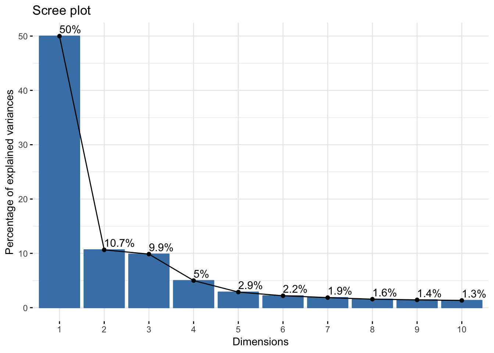
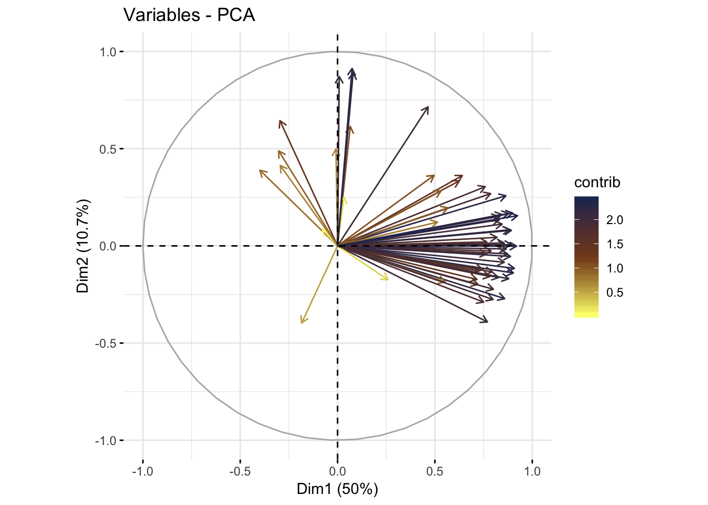
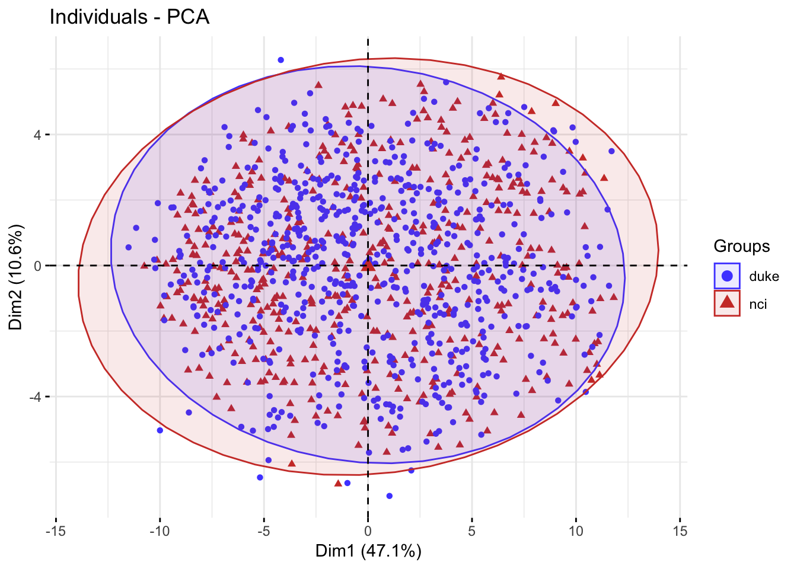
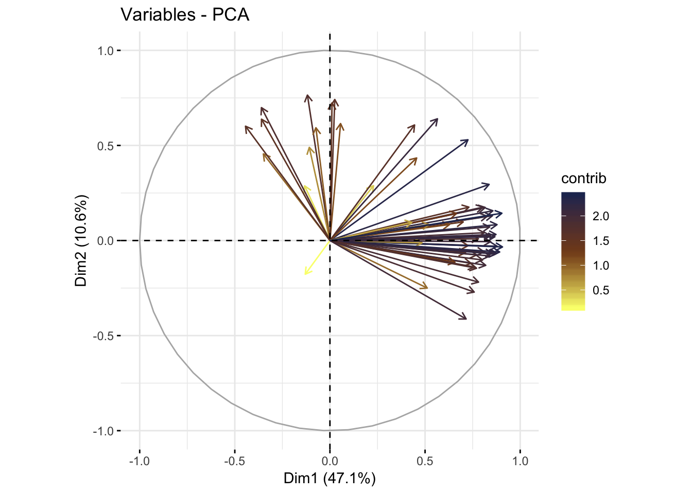
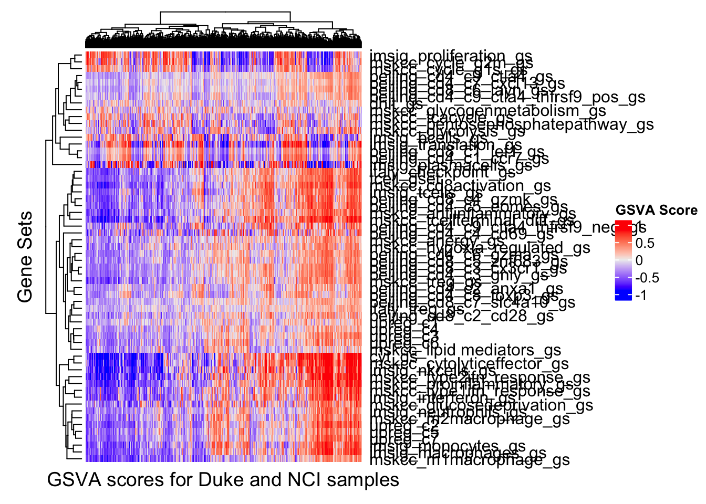

Visualizing results of GSVA with version 2 gene lists
mleukam
2019-07-02
Last updated: 2019-07-03
Checks: 7 0
Knit directory: dlbcl_landscape/
This reproducible R Markdown analysis was created with workflowr (version 1.4.0). The Checks tab describes the reproducibility checks that were applied when the results were created. The Past versions tab lists the development history.
Great! Since the R Markdown file has been committed to the Git repository, you know the exact version of the code that produced these results.
Great job! The global environment was empty. Objects defined in the global environment can affect the analysis in your R Markdown file in unknown ways. For reproduciblity it’s best to always run the code in an empty environment.
The command set.seed(20190613) was run prior to running the code in the R Markdown file. Setting a seed ensures that any results that rely on randomness, e.g. subsampling or permutations, are reproducible.
Great job! Recording the operating system, R version, and package versions is critical for reproducibility.
Nice! There were no cached chunks for this analysis, so you can be confident that you successfully produced the results during this run.
Great job! Using relative paths to the files within your workflowr project makes it easier to run your code on other machines.
Great! You are using Git for version control. Tracking code development and connecting the code version to the results is critical for reproducibility. The version displayed above was the version of the Git repository at the time these results were generated.
Note that you need to be careful to ensure that all relevant files for the analysis have been committed to Git prior to generating the results (you can use wflow_publish or wflow_git_commit). workflowr only checks the R Markdown file, but you know if there are other scripts or data files that it depends on. Below is the status of the Git repository when the results were generated:
Ignored files:
Ignored: .DS_Store
Ignored: .Rhistory
Ignored: .Rproj.user/
Ignored: data/1-s2.0-S1074761316304320-mmc2.xlsx
Ignored: data/41591_2018_45_MOESM5_ESM.xlsx
Ignored: data/NIH_PDL1_amp_cases.csv
Ignored: data/NIH_PDL1_nonamp_cases.csv
Ignored: data/aliquot.tsv
Ignored: data/azizi_curated.xlsx
Ignored: data/c2_human_immune_genesets.gmt
Ignored: data/dlbcl_total_immune_gset_v1_results.rds
Ignored: data/ds_JCO.18.01583-2.xlsx
Ignored: data/gdc_clinical_data.json
Ignored: data/gdc_files_and_case_ids.json
Ignored: data/gencode.v22.primary_assembly.annotation.gtf.geneinfo
Ignored: data/gset_ids_complete.rds
Ignored: data/htseq_counts/
Ignored: data/journal.pone.0088309.s001.XLS
Ignored: data/mmc1.xlsx
Ignored: data/nejmoa1801445_appendix_2.xlsx
Ignored: data/sample.tsv
Ignored: data/sig.rda
Ignored: data/temp.dgelist_limma.rds
Ignored: docs/.DS_Store
Ignored: output/combined_clin_data.xlsx
Ignored: output/combined_dlbcl_expr_matrix.csv
Ignored: output/dlbcl_expr_matrix.csv
Ignored: output/dlbcl_total_immune_gset_v2_results.rds
Ignored: output/duke_expression_set_cleaned_log.rds
Ignored: output/duke_expressionset.rds
Ignored: output/duke_expressionset_pext.rds
Ignored: output/duke_extended_pheno_data.csv
Ignored: output/expr_matrix.csv
Ignored: output/gset_ids_complete_2.rds
Ignored: output/nci_dlbcl_annotation.csv
Ignored: output/nci_dlbcl_unprocessed_counts.csv
Ignored: output/nci_expressionset.rds
Ignored: output/nci_expressionset_pext.rds
Ignored: output/nci_extended_pheno_data.csv
Ignored: output/total_immune_gset_v1.rds
Untracked files:
Untracked: output/combined_expressionset.rds
Unstaged changes:
Modified: analysis/merge.Rmd
Note that any generated files, e.g. HTML, png, CSS, etc., are not included in this status report because it is ok for generated content to have uncommitted changes.
These are the previous versions of the R Markdown and HTML files. If you’ve configured a remote Git repository (see ?wflow_git_remote), click on the hyperlinks in the table below to view them.
| File | Version | Author | Date | Message |
|---|---|---|---|---|
| Rmd | d27c601 | mleukam | 2019-07-03 | wflow_publish(“analysis/visualizing_gsva_scores_2.Rmd”) |
| html | 28102e4 | mleukam | 2019-07-02 | Build site. |
| Rmd | 1453a6c | mleukam | 2019-07-02 | updating index and titles |
| html | 38052a4 | mleukam | 2019-07-02 | Build site. |
| Rmd | 436a39c | mleukam | 2019-07-02 | start of clustering with new gene sets v2 |
Setup
Clear the workspace
rm(list = ls())Load packages
library("tidyverse")── Attaching packages ────────────────────── tidyverse 1.2.1 ──✔ ggplot2 3.1.1 ✔ purrr 0.3.2
✔ tibble 2.1.3 ✔ dplyr 0.8.1
✔ tidyr 0.8.3 ✔ stringr 1.4.0
✔ readr 1.3.1 ✔ forcats 0.4.0── Conflicts ───────────────────────── tidyverse_conflicts() ──
✖ dplyr::filter() masks stats::filter()
✖ dplyr::lag() masks stats::lag()library("factoextra")Welcome! Related Books: `Practical Guide To Cluster Analysis in R` at https://goo.gl/13EFCZlibrary("FactoMineR")
library("ggpubr")Loading required package: magrittr
Attaching package: 'magrittr'The following object is masked from 'package:purrr':
set_namesThe following object is masked from 'package:tidyr':
extractlibrary("ggsci")
library("Biobase")Loading required package: BiocGenericsLoading required package: parallel
Attaching package: 'BiocGenerics'The following objects are masked from 'package:parallel':
clusterApply, clusterApplyLB, clusterCall, clusterEvalQ,
clusterExport, clusterMap, parApply, parCapply, parLapply,
parLapplyLB, parRapply, parSapply, parSapplyLBThe following objects are masked from 'package:dplyr':
combine, intersect, setdiff, unionThe following objects are masked from 'package:stats':
IQR, mad, sd, var, xtabsThe following objects are masked from 'package:base':
anyDuplicated, append, as.data.frame, basename, cbind,
colMeans, colnames, colSums, dirname, do.call, duplicated,
eval, evalq, Filter, Find, get, grep, grepl, intersect,
is.unsorted, lapply, lengths, Map, mapply, match, mget, order,
paste, pmax, pmax.int, pmin, pmin.int, Position, rank, rbind,
Reduce, rowMeans, rownames, rowSums, sapply, setdiff, sort,
table, tapply, union, unique, unsplit, which, which.max,
which.minWelcome to Bioconductor
Vignettes contain introductory material; view with
'browseVignettes()'. To cite Bioconductor, see
'citation("Biobase")', and for packages 'citation("pkgname")'.library("ComplexHeatmap")Loading required package: grid========================================
ComplexHeatmap version 1.20.0
Bioconductor page: http://bioconductor.org/packages/ComplexHeatmap/
Github page: https://github.com/jokergoo/ComplexHeatmap
Documentation: http://bioconductor.org/packages/ComplexHeatmap/
If you use it in published research, please cite:
Gu, Z. Complex heatmaps reveal patterns and correlations in multidimensional
genomic data. Bioinformatics 2016.
========================================NB: need to transfer scripts to /code/:
- run_gsva2.pbs
- gsva2.sh
- gsva2.r
Read in data
gs_matrix <- readRDS("output/dlbcl_total_immune_gset_v2_results.rds")
gs_matrix[, 1:5] DLBCL11667 DLBCL10501 DLBCL10954
cyt_gs 0.55328765 -0.322775524 -0.92034176
dhit_gs 0.08245990 -0.089250111 0.16664648
imsig_bcells_gs 0.41498219 -0.341692802 0.41508354
imsig_proliferation_gs 0.40733873 0.135795897 0.05052293
imsig_interferon_gs 0.55798991 -0.471522133 -0.62348280
imsig_macrophages_gs 0.31104034 0.009008605 -0.55289027
imsig_monocytes_gs -0.17622613 -0.105331487 -0.51268325
imsig_neutrophils_gs -0.10723029 -0.397345407 -0.07553035
imsig_nkcells_gs 0.01907475 -0.136728314 -0.92749871
imsig_plasmacells_gs 0.70498172 0.434456448 -0.49344036
imsig_translation_gs 0.73332963 0.219645988 -0.65702584
imsig_tcells_gs 0.10080026 -0.503739016 -0.42907240
mskcc_treg_gs -0.26561435 -0.430370404 -0.33786787
mskcc_cd8activation_gs 0.07875709 -0.414831406 -0.41035247
mskcc_antiinflammatory_gs -0.03438273 -0.547785133 -0.32909009
mskcc_anergy_gs 0.28367901 0.172635011 -0.13486743
mskcc_proinflammatory_gs 0.25434627 -0.535651507 -0.71495258
mskcc_lipid mediators_gs 0.21096078 0.351742537 -0.44366021
mskcc_glycolysis_gs -0.45685608 0.143271038 -0.37692217
mskcc_tcacycle_gs -0.48465186 0.160815658 0.02000163
mskcc_pentosephosphatepathway_gs -0.29833912 0.172545897 -0.53153303
mskcc_glycogenmetabolism_gs -0.04283642 0.323992778 0.04578544
mskcc_glucosedeprivation_gs 0.19851651 0.474622919 -0.35216036
mskcc_m1macrophage_gs -0.13455463 -0.120962772 -0.65414563
mskcc_m2macrophage_gs -0.15731821 0.162200299 -0.35019127
mskcc_cytolyticeffector_gs 0.42916863 -0.494734116 -0.84133431
mskcc_type1ifn_response_gs 0.56974782 -0.499813344 -0.67946355
mskcc_type2ifn_response_gs 0.40216993 -0.410524425 -0.81593715
mskcc_hypoxia_regulated_gs -0.21408920 0.110898407 -0.26262325
mskcc_tcellterminal_diff_gs -0.10697634 -0.483223919 -0.52856183
mskcc_cycle_g1s_gs 0.34282136 0.564501462 0.16423335
mskcc_cycle_g2m_gs 0.16251399 -0.253888811 -0.19902198
beijing_cd8_c1_lef1_gs 0.35991458 0.053424764 -0.34298090
beijing_cd8_c2_cd28_gs 0.07283213 0.260235365 -0.41281086
beijing_cd8_c3_cx3cr1_gs -0.01669245 -0.333112363 -0.22058062
beijing_cd8_c4_gzmk_gs 0.06390577 -0.204068482 -0.39259294
beijing_cd8_c5_znf683_gs -0.18695086 -0.201706066 -0.05700929
beijing_cd8_c6_layn_gs 0.03727926 -0.012066823 -0.25182118
beijing_cd8_c7_slc4a10_gs -0.10847142 -0.264664542 -0.06325872
beijing_cd4_c1_ccr7_gs 0.51958873 0.091200664 -0.47941726
beijing_cd4_c2_anxa1_gs -0.05563435 -0.306755953 -0.15146000
beijing_cd4_c3_gnly_gs -0.15390730 -0.417501347 -0.35953543
beijing_cd4_c4_cd69_gs 0.56847784 -0.008645968 -0.22883304
beijing_cd4_c5_eomes_gs 0.29099826 -0.306848294 -0.54420492
beijing_cd4_c6_gzma_gs -0.07955258 -0.123002501 -0.10314230
beijing_cd4_c7_cxcl13_gs -0.06764707 0.018555403 -0.07517384
beijing_cd4_c8_foxp3_gs 0.23649946 -0.173479202 -0.33080743
beijing_cd4_c9_ctla4_gs -0.17844716 -0.168981750 -0.12737563
beijing_cd4_c9_ctla4_tnfrsf9_neg_gs 0.39006696 -0.162953847 -0.19880324
beijing_cd4_c9_ctla4_tnfrsf9_pos_gs -0.24473856 0.056434414 -0.07740100
italy_checkpoint_gs 0.15827416 -0.159913124 -0.44112928
italy_treg_gs -0.13567053 -0.155982934 -0.04270027
upreg_c1 0.16357423 -0.151199216 0.02899520
upreg_c2 0.40837087 -0.194119856 -0.51647584
upreg_c3 0.22156555 -0.282160214 -0.42197150
upreg_c4 0.19291648 -0.171552604 -0.17193751
upreg_c5 0.06996962 -0.249248397 -0.24463832
upreg_c6 0.05655534 0.142137097 -0.34699971
upreg_c7 0.11666310 -0.227352590 -0.41310271
tcell_gset 0.04114488 -0.353498455 -0.50335850
DLBCL10984 DLBCL11206
cyt_gs 0.29861051 -0.940709416
dhit_gs -0.30340115 -0.221376095
imsig_bcells_gs 0.05463954 -0.576586128
imsig_proliferation_gs -0.57675870 -0.541926288
imsig_interferon_gs 0.66208700 -0.435959961
imsig_macrophages_gs 0.35410269 -0.402966683
imsig_monocytes_gs 0.24828574 -0.234535962
imsig_neutrophils_gs 0.26247014 -0.261150700
imsig_nkcells_gs 0.40853101 -0.723200414
imsig_plasmacells_gs -0.79199033 0.402382185
imsig_translation_gs -0.58945604 -0.582659854
imsig_tcells_gs 0.49586973 -0.382768058
mskcc_treg_gs -0.08984207 -0.475378454
mskcc_cd8activation_gs 0.33036830 -0.489223752
mskcc_antiinflammatory_gs -0.06864753 0.175586285
mskcc_anergy_gs 0.29897710 0.034832018
mskcc_proinflammatory_gs 0.15648108 -0.367904789
mskcc_lipid mediators_gs -0.11837051 0.054176542
mskcc_glycolysis_gs -0.45018501 -0.410344956
mskcc_tcacycle_gs 0.08827580 -0.408924713
mskcc_pentosephosphatepathway_gs -0.38364064 -0.340418374
mskcc_glycogenmetabolism_gs 0.02932123 -0.032948477
mskcc_glucosedeprivation_gs 0.66836554 0.422028076
mskcc_m1macrophage_gs 0.13890471 -0.435181713
mskcc_m2macrophage_gs -0.17789131 -0.170350726
mskcc_cytolyticeffector_gs 0.39404723 -0.878884669
mskcc_type1ifn_response_gs 0.60865862 -0.322228538
mskcc_type2ifn_response_gs 0.38199437 -0.650786160
mskcc_hypoxia_regulated_gs 0.06672615 -0.080412914
mskcc_tcellterminal_diff_gs -0.07356242 -0.142527785
mskcc_cycle_g1s_gs -0.35842370 -0.490326065
mskcc_cycle_g2m_gs -0.61076618 -0.512928449
beijing_cd8_c1_lef1_gs -0.05865309 -0.377504328
beijing_cd8_c2_cd28_gs 0.17374825 0.178994841
beijing_cd8_c3_cx3cr1_gs 0.42034955 -0.221092293
beijing_cd8_c4_gzmk_gs 0.55900292 -0.343328126
beijing_cd8_c5_znf683_gs 0.25630377 -0.162734575
beijing_cd8_c6_layn_gs -0.02921550 -0.234630126
beijing_cd8_c7_slc4a10_gs 0.14020818 -0.019388358
beijing_cd4_c1_ccr7_gs -0.12487201 -0.442875981
beijing_cd4_c2_anxa1_gs 0.43555267 0.006221130
beijing_cd4_c3_gnly_gs 0.32066521 -0.185720717
beijing_cd4_c4_cd69_gs -0.02456032 0.534040356
beijing_cd4_c5_eomes_gs 0.43992899 -0.421961606
beijing_cd4_c6_gzma_gs 0.19360598 0.051646741
beijing_cd4_c7_cxcl13_gs -0.19894724 -0.193981539
beijing_cd4_c8_foxp3_gs 0.22722566 -0.207017288
beijing_cd4_c9_ctla4_gs -0.03446175 -0.122019398
beijing_cd4_c9_ctla4_tnfrsf9_neg_gs 0.56386362 0.253385264
beijing_cd4_c9_ctla4_tnfrsf9_pos_gs -0.28162601 -0.132284915
italy_checkpoint_gs 0.39136741 -0.410815472
italy_treg_gs -0.13687391 -0.119769313
upreg_c1 -0.08293911 -0.013485245
upreg_c2 0.12025338 -0.387581139
upreg_c3 0.19546071 -0.071644322
upreg_c4 0.26260972 -0.006227412
upreg_c5 0.06688220 -0.314107721
upreg_c6 -0.10712152 -0.048634137
upreg_c7 0.18721022 -0.485196956
tcell_gset 0.39872487 -0.454359017combined_es <- readRDS("output/combined_expressionset.rds")
pheno_data <- pData(combined_es)Set up PD-L1 groups
str(pheno_data)'data.frame': 1146 obs. of 72 variables:
$ source : Factor w/ 2 levels "duke","nci": 2 2 2 2 2 2 2 2 2 2 ...
$ abc_gcb_rna : Factor w/ 3 levels "ABC","GCB","Unclassified": 2 2 1 1 3 1 1 2 2 1 ...
$ ipi_group : chr "Low" "Low" NA NA ...
$ os_status : num 1 0 1 0 1 0 0 0 0 0 ...
$ os_years : num 1.73 1.85 1.16 0 6.3 ...
$ age : num 48 42 47 75 76 41 54 57 32 56 ...
$ gender : chr "F" "M" "M" "F" ...
$ ipi_initial : Factor w/ 6 levels "0","1","2","3",..: 2 2 2 2 3 3 4 4 3 3 ...
$ pdl1_status : chr "non-amplified" "non-amplified" "non-amplified" "low_amplified" ...
$ ldh_abnormal : Factor w/ 2 levels "0","1": 1 1 2 NA 1 NA 2 2 NA 2 ...
$ extranodal_sites_2plus : Factor w/ 2 levels "0","1": 1 1 NA 1 1 1 NA 1 1 1 ...
$ ps_2plus : Factor w/ 2 levels "0","1": 1 2 NA 1 2 NA 2 2 2 2 ...
$ ann_arbor_stage_3plus : chr "1" "0" "0" "0" ...
$ ipi_high : chr "1" "1" "3" "2" ...
$ case_id : chr "3e164d5d-afa0-4e96-b177-ea9fdf69da7a" "678acbbd-3f1b-4464-ba21-a59606cf19ae" "c1b07bfa-d234-42d6-8a41-97b7a7924f0d" "15b380e1-d220-42b9-8613-18fcefccb0a4" ...
$ filename : chr "b384270b-0315-49c6-bb46-d155d8d41fec.htseq_counts.txt.gz" "ab3f9584-f27f-4d6e-a5de-ac0d0c20de13.htseq_counts.txt.gz" "92fbf689-0c26-4664-9dde-c41534f7b390.htseq_counts.txt.gz" "dc44d3ba-5c4d-40a1-b8a2-f27b88325d0b.htseq_counts.txt.gz" ...
$ project_id : chr "NCICCR-DLBCL" "NCICCR-DLBCL" "NCICCR-DLBCL" "NCICCR-DLBCL" ...
$ days_to_last_follow_up : num 633 674 425 NA 2299 ...
$ updated_datetime : POSIXct, format: "2018-08-31 20:09:50" "2018-08-31 20:09:50" ...
$ tumor_stage : chr "IPI:1" "IPI:1" "IPI:13" "IPI:12" ...
$ age_at_diagnosis : num 17520 15330 17155 27375 27740 ...
$ tissue_or_organ_of_origin : chr "Lymph node, NOS" "Lymph node, NOS" "Lymph node, NOS" "Lymph node, NOS" ...
$ ann_arbor_clinical_stage : chr "Stage III" "Stage II" "Stage I" "Stage I" ...
$ progression_or_recurrence : chr "not reported" "not reported" "not reported" "not reported" ...
$ last_known_disease_status : chr "not reported" "not reported" "not reported" "not reported" ...
$ primary_diagnosis : chr "Diffuse large B-cell lymphoma, NOS" "Diffuse large B-cell lymphoma, NOS" "Diffuse large B-cell lymphoma, NOS" "Diffuse large B-cell lymphoma, NOS" ...
$ tumor_grade : chr "not reported" "not reported" "not reported" "not reported" ...
$ demographic.gender : chr "female" "male" "male" "female" ...
$ demographic.submitter_id : chr "DLBCL11667-demographic" "DLBCL10501-demographic" "DLBCL10954-demographic" "DLBCL10984-demographic" ...
$ demographic.race : chr "not reported" "not reported" "not reported" "not reported" ...
$ demographic.ethnicity : chr "not reported" "not reported" "not reported" "not reported" ...
$ demographic.vital_status : chr "Dead" "Alive" "Dead" "Alive" ...
$ size : num 235439 232896 248096 245979 246899 ...
$ dbGaP accession : chr "phs001444" "phs001444" "phs001444" "phs001444" ...
$ Diagnosis : chr "Diffuse large B cell lymphoma" "Diffuse large B cell lymphoma" "Diffuse large B cell lymphoma" "Diffuse large B cell lymphoma" ...
$ Genetic Subtype : chr "EZB" "EZB" "Other" "Other" ...
$ Biopsy Type : chr "Pre-treatment" "Pre-treatment" "Pre-treatment" "Pre-treatment" ...
$ Treatment__ : chr "Immunochemotherapy" "Immunochemotherapy" "Immunochemotherapy" "NA" ...
$ Ann Arbor Stage : num 3 2 1 1 1 2 3 3 3 2 ...
$ LDH Ratio : num 0.79 0.6 1.23 NA 0.78 NA 2.2 1.2 NA 1.7 ...
$ ECOG Performance Status : num 1 2 NA 0 2 NA 2 2 2 2 ...
$ Number of Extranodal Sites : num 0 1 NA 0 1 0 NA 1 0 0 ...
$ IPI Range : num 1 1 13 12 2 2 34 3 23 2 ...
$ Progression_Free Survival _PFS_ Status_ 0 No Progressoin_ 1 Progression: num 1 0 1 0 1 0 0 0 0 0 ...
$ Progression_Free Survival _PFS_ Time _yrs : num 0.977 1.845 0.611 0 6.3 ...
$ Included in Survival Analysis : chr "Yes" "Yes" "Yes" "No" ...
$ lib_size : int NA NA NA NA NA NA NA NA NA NA ...
$ lane : Factor w/ 7 levels "C7FYAANXX","C7U9KANXX",..: NA NA NA NA NA NA NA NA NA NA ...
$ AGE IPI : num NA NA NA NA NA NA NA NA NA NA ...
$ B symptoms at diagnosis : chr NA NA NA NA ...
$ Response to initial therapy : chr NA NA NA NA ...
$ Testicular involvement : chr NA NA NA NA ...
$ CNS Involvement : chr NA NA NA NA ...
$ CNS Relapse : chr NA NA NA NA ...
$ age at diagnosis : num NA NA NA NA NA NA NA NA NA NA ...
$ log2 MYC expr : num NA NA NA NA NA NA NA NA NA NA ...
$ log2 BCL2 expr : num NA NA NA NA NA NA NA NA NA NA ...
$ log2 BCL6 expr : num NA NA NA NA NA NA NA NA NA NA ...
$ MYC high expr : num NA NA NA NA NA NA NA NA NA NA ...
$ BCL2 high expr : num NA NA NA NA NA NA NA NA NA NA ...
$ BCL6 high expr : num NA NA NA NA NA NA NA NA NA NA ...
$ MYC IHC : chr NA NA NA NA ...
$ BCL2 IHC : chr NA NA NA NA ...
$ BCL6 IHC : chr NA NA NA NA ...
$ BCL2 translocation (FISH) : chr NA NA NA NA ...
$ MYC translocation (FISH) : chr NA NA NA NA ...
$ BCL6 translocation (FISH) : chr NA NA NA NA ...
$ ABC GCB ratio (RNAseq) : num NA NA NA NA NA NA NA NA NA NA ...
$ Nanostring ABC GCB : chr NA NA NA NA ...
$ Nanostring LPS : num NA NA NA NA NA NA NA NA NA NA ...
$ Hans GCB NonGCB : chr NA NA NA NA ...
$ Genomic Risk Model : chr NA NA NA NA ...summary(as.factor(pheno_data$pdl1_status))high_amplified low_amplified non-amplified NA's
20 45 406 675 pheno_data_tbl <- as.data.frame(pheno_data) %>%
rownames_to_column(var = "sample_id") %>%
as_tibble() %>%
mutate(pdl1_status = replace_na(pdl1_status, "not_assessed")) %>%
mutate(pdl1_status = ifelse(pdl1_status == "non-amplified",
"non_amplified", pdl1_status))
summary(as.factor(pheno_data_tbl$pdl1_status))high_amplified low_amplified non_amplified not_assessed
20 45 406 675 group_table <- pheno_data_tbl %>%
dplyr::select(sample_id, pdl1_status)
# merge group data into gsva matrix
pdl1_comb_exprs <- as.data.frame(t(gs_matrix)) %>%
rownames_to_column(var = "sample_id") %>%
as_tibble() %>%
left_join(group_table) %>%
dplyr::select(sample_id, pdl1_status, everything()) %>%
as.data.frame() %>%
column_to_rownames(var = "sample_id") %>%
mutate(pdl1_status = as.factor(pdl1_status))Joining, by = "sample_id"PCA plot of results
# remove low amplified and samples not assessed
nrow(pdl1_comb_exprs)[1] 1146pdl1_comb_exprs_filt <- pdl1_comb_exprs %>%
dplyr::filter(pdl1_status %in% c("high_amplified", "non_amplified"))
nrow(pdl1_comb_exprs_filt)[1] 426# get PCA values
dlbcl_pca <- PCA(pdl1_comb_exprs_filt[-1], scale.unit = TRUE, graph = FALSE)
# get eigenvalues
eig_val <- get_eigenvalue(dlbcl_pca)
eig_val eigenvalue variance.percent cumulative.variance.percent
Dim.1 29.994484281 49.990807135 49.99081
Dim.2 6.391020374 10.651700624 60.64251
Dim.3 5.918240168 9.863733613 70.50624
Dim.4 2.994179357 4.990298928 75.49654
Dim.5 1.724459099 2.874098499 78.37064
Dim.6 1.316438481 2.194064135 80.56470
Dim.7 1.112667276 1.854445460 82.41915
Dim.8 0.939159519 1.565265865 83.98441
Dim.9 0.864413258 1.440688764 85.42510
Dim.10 0.800556965 1.334261608 86.75936
Dim.11 0.686627399 1.144378998 87.90374
Dim.12 0.650147789 1.083579649 88.98732
Dim.13 0.601841145 1.003068575 89.99039
Dim.14 0.516565666 0.860942777 90.85133
Dim.15 0.510409768 0.850682947 91.70202
Dim.16 0.436020685 0.726701141 92.42872
Dim.17 0.395238162 0.658730270 93.08745
Dim.18 0.338362397 0.563937328 93.65139
Dim.19 0.306161029 0.510268381 94.16165
Dim.20 0.266743657 0.444572762 94.60623
Dim.21 0.255066863 0.425111438 95.03134
Dim.22 0.237186251 0.395310418 95.42665
Dim.23 0.227500359 0.379167265 95.80582
Dim.24 0.202272736 0.337121227 96.14294
Dim.25 0.183518720 0.305864533 96.44880
Dim.26 0.169352120 0.282253533 96.73106
Dim.27 0.165838033 0.276396721 97.00745
Dim.28 0.151429091 0.252381819 97.25983
Dim.29 0.137615482 0.229359136 97.48919
Dim.30 0.127756866 0.212928110 97.70212
Dim.31 0.109458601 0.182431001 97.88455
Dim.32 0.098052431 0.163420718 98.04797
Dim.33 0.090397096 0.150661827 98.19864
Dim.34 0.089099880 0.148499800 98.34714
Dim.35 0.085825819 0.143043031 98.49018
Dim.36 0.081552895 0.135921492 98.62610
Dim.37 0.073649890 0.122749817 98.74885
Dim.38 0.070315848 0.117193080 98.86604
Dim.39 0.064944934 0.108241556 98.97428
Dim.40 0.058894253 0.098157088 99.07244
Dim.41 0.058172189 0.096953649 99.16939
Dim.42 0.051756344 0.086260574 99.25566
Dim.43 0.043601581 0.072669301 99.32832
Dim.44 0.042145826 0.070243044 99.39857
Dim.45 0.039515183 0.065858638 99.46443
Dim.46 0.037493268 0.062488781 99.52692
Dim.47 0.033285041 0.055475068 99.58239
Dim.48 0.031883668 0.053139447 99.63553
Dim.49 0.028087618 0.046812697 99.68234
Dim.50 0.026489199 0.044148664 99.72649
Dim.51 0.025099641 0.041832735 99.76832
Dim.52 0.022568897 0.037614828 99.80594
Dim.53 0.021180526 0.035300876 99.84124
Dim.54 0.017949943 0.029916572 99.87116
Dim.55 0.017250041 0.028750069 99.89991
Dim.56 0.016128054 0.026880091 99.92679
Dim.57 0.015470674 0.025784457 99.95257
Dim.58 0.014160073 0.023600122 99.97617
Dim.59 0.010066553 0.016777589 99.99295
Dim.60 0.004231037 0.007051728 100.00000fviz_eig(dlbcl_pca, addlabels = TRUE, ylim = c(0, 50))
ind <- get_pca_ind(dlbcl_pca)
pdl1_status <- pdl1_comb_exprs_filt$pdl1_status
# visualize PCA
fviz_pca_ind(dlbcl_pca,
label = "none",
habillage = pdl1_comb_exprs_filt$pdl1_status,
palette = "igv",
addEllipses = TRUE)
fviz_pca_var(dlbcl_pca, col.var = "contrib",
gradient.cols = "rickandmorty",
label = "none")
Set up Duke/NCI groups
str(pheno_data)'data.frame': 1146 obs. of 72 variables:
$ source : Factor w/ 2 levels "duke","nci": 2 2 2 2 2 2 2 2 2 2 ...
$ abc_gcb_rna : Factor w/ 3 levels "ABC","GCB","Unclassified": 2 2 1 1 3 1 1 2 2 1 ...
$ ipi_group : chr "Low" "Low" NA NA ...
$ os_status : num 1 0 1 0 1 0 0 0 0 0 ...
$ os_years : num 1.73 1.85 1.16 0 6.3 ...
$ age : num 48 42 47 75 76 41 54 57 32 56 ...
$ gender : chr "F" "M" "M" "F" ...
$ ipi_initial : Factor w/ 6 levels "0","1","2","3",..: 2 2 2 2 3 3 4 4 3 3 ...
$ pdl1_status : chr "non-amplified" "non-amplified" "non-amplified" "low_amplified" ...
$ ldh_abnormal : Factor w/ 2 levels "0","1": 1 1 2 NA 1 NA 2 2 NA 2 ...
$ extranodal_sites_2plus : Factor w/ 2 levels "0","1": 1 1 NA 1 1 1 NA 1 1 1 ...
$ ps_2plus : Factor w/ 2 levels "0","1": 1 2 NA 1 2 NA 2 2 2 2 ...
$ ann_arbor_stage_3plus : chr "1" "0" "0" "0" ...
$ ipi_high : chr "1" "1" "3" "2" ...
$ case_id : chr "3e164d5d-afa0-4e96-b177-ea9fdf69da7a" "678acbbd-3f1b-4464-ba21-a59606cf19ae" "c1b07bfa-d234-42d6-8a41-97b7a7924f0d" "15b380e1-d220-42b9-8613-18fcefccb0a4" ...
$ filename : chr "b384270b-0315-49c6-bb46-d155d8d41fec.htseq_counts.txt.gz" "ab3f9584-f27f-4d6e-a5de-ac0d0c20de13.htseq_counts.txt.gz" "92fbf689-0c26-4664-9dde-c41534f7b390.htseq_counts.txt.gz" "dc44d3ba-5c4d-40a1-b8a2-f27b88325d0b.htseq_counts.txt.gz" ...
$ project_id : chr "NCICCR-DLBCL" "NCICCR-DLBCL" "NCICCR-DLBCL" "NCICCR-DLBCL" ...
$ days_to_last_follow_up : num 633 674 425 NA 2299 ...
$ updated_datetime : POSIXct, format: "2018-08-31 20:09:50" "2018-08-31 20:09:50" ...
$ tumor_stage : chr "IPI:1" "IPI:1" "IPI:13" "IPI:12" ...
$ age_at_diagnosis : num 17520 15330 17155 27375 27740 ...
$ tissue_or_organ_of_origin : chr "Lymph node, NOS" "Lymph node, NOS" "Lymph node, NOS" "Lymph node, NOS" ...
$ ann_arbor_clinical_stage : chr "Stage III" "Stage II" "Stage I" "Stage I" ...
$ progression_or_recurrence : chr "not reported" "not reported" "not reported" "not reported" ...
$ last_known_disease_status : chr "not reported" "not reported" "not reported" "not reported" ...
$ primary_diagnosis : chr "Diffuse large B-cell lymphoma, NOS" "Diffuse large B-cell lymphoma, NOS" "Diffuse large B-cell lymphoma, NOS" "Diffuse large B-cell lymphoma, NOS" ...
$ tumor_grade : chr "not reported" "not reported" "not reported" "not reported" ...
$ demographic.gender : chr "female" "male" "male" "female" ...
$ demographic.submitter_id : chr "DLBCL11667-demographic" "DLBCL10501-demographic" "DLBCL10954-demographic" "DLBCL10984-demographic" ...
$ demographic.race : chr "not reported" "not reported" "not reported" "not reported" ...
$ demographic.ethnicity : chr "not reported" "not reported" "not reported" "not reported" ...
$ demographic.vital_status : chr "Dead" "Alive" "Dead" "Alive" ...
$ size : num 235439 232896 248096 245979 246899 ...
$ dbGaP accession : chr "phs001444" "phs001444" "phs001444" "phs001444" ...
$ Diagnosis : chr "Diffuse large B cell lymphoma" "Diffuse large B cell lymphoma" "Diffuse large B cell lymphoma" "Diffuse large B cell lymphoma" ...
$ Genetic Subtype : chr "EZB" "EZB" "Other" "Other" ...
$ Biopsy Type : chr "Pre-treatment" "Pre-treatment" "Pre-treatment" "Pre-treatment" ...
$ Treatment__ : chr "Immunochemotherapy" "Immunochemotherapy" "Immunochemotherapy" "NA" ...
$ Ann Arbor Stage : num 3 2 1 1 1 2 3 3 3 2 ...
$ LDH Ratio : num 0.79 0.6 1.23 NA 0.78 NA 2.2 1.2 NA 1.7 ...
$ ECOG Performance Status : num 1 2 NA 0 2 NA 2 2 2 2 ...
$ Number of Extranodal Sites : num 0 1 NA 0 1 0 NA 1 0 0 ...
$ IPI Range : num 1 1 13 12 2 2 34 3 23 2 ...
$ Progression_Free Survival _PFS_ Status_ 0 No Progressoin_ 1 Progression: num 1 0 1 0 1 0 0 0 0 0 ...
$ Progression_Free Survival _PFS_ Time _yrs : num 0.977 1.845 0.611 0 6.3 ...
$ Included in Survival Analysis : chr "Yes" "Yes" "Yes" "No" ...
$ lib_size : int NA NA NA NA NA NA NA NA NA NA ...
$ lane : Factor w/ 7 levels "C7FYAANXX","C7U9KANXX",..: NA NA NA NA NA NA NA NA NA NA ...
$ AGE IPI : num NA NA NA NA NA NA NA NA NA NA ...
$ B symptoms at diagnosis : chr NA NA NA NA ...
$ Response to initial therapy : chr NA NA NA NA ...
$ Testicular involvement : chr NA NA NA NA ...
$ CNS Involvement : chr NA NA NA NA ...
$ CNS Relapse : chr NA NA NA NA ...
$ age at diagnosis : num NA NA NA NA NA NA NA NA NA NA ...
$ log2 MYC expr : num NA NA NA NA NA NA NA NA NA NA ...
$ log2 BCL2 expr : num NA NA NA NA NA NA NA NA NA NA ...
$ log2 BCL6 expr : num NA NA NA NA NA NA NA NA NA NA ...
$ MYC high expr : num NA NA NA NA NA NA NA NA NA NA ...
$ BCL2 high expr : num NA NA NA NA NA NA NA NA NA NA ...
$ BCL6 high expr : num NA NA NA NA NA NA NA NA NA NA ...
$ MYC IHC : chr NA NA NA NA ...
$ BCL2 IHC : chr NA NA NA NA ...
$ BCL6 IHC : chr NA NA NA NA ...
$ BCL2 translocation (FISH) : chr NA NA NA NA ...
$ MYC translocation (FISH) : chr NA NA NA NA ...
$ BCL6 translocation (FISH) : chr NA NA NA NA ...
$ ABC GCB ratio (RNAseq) : num NA NA NA NA NA NA NA NA NA NA ...
$ Nanostring ABC GCB : chr NA NA NA NA ...
$ Nanostring LPS : num NA NA NA NA NA NA NA NA NA NA ...
$ Hans GCB NonGCB : chr NA NA NA NA ...
$ Genomic Risk Model : chr NA NA NA NA ...summary(as.factor(pheno_data$source))duke nci
665 481 group_table <- as.data.frame(pheno_data) %>%
rownames_to_column(var = "sample_id") %>%
dplyr::select(sample_id, source)
# merge group data into gsva matrix
dukenci_comb_exprs <- as.data.frame(t(gs_matrix)) %>%
rownames_to_column(var = "sample_id") %>%
as_tibble() %>%
left_join(group_table) %>%
dplyr::select(sample_id, source, everything()) %>%
as.data.frame() %>%
column_to_rownames(var = "sample_id") %>%
mutate(source = as.factor(source))Joining, by = "sample_id"PCA Plot of results
# get PCA values
dlbcl_pca <- PCA(dukenci_comb_exprs[-1], scale.unit = TRUE, graph = FALSE)
# get eigenvalues
eig_val <- get_eigenvalue(dlbcl_pca)
eig_val eigenvalue variance.percent cumulative.variance.percent
Dim.1 28.232064075 47.05344012 47.05344
Dim.2 6.357252985 10.59542164 57.64886
Dim.3 5.732635463 9.55439244 67.20325
Dim.4 2.903485920 4.83914320 72.04240
Dim.5 1.859078712 3.09846452 75.14086
Dim.6 1.584250677 2.64041779 77.78128
Dim.7 1.378474121 2.29745687 80.07874
Dim.8 0.990796468 1.65132745 81.73006
Dim.9 0.923721862 1.53953644 83.26960
Dim.10 0.872103565 1.45350594 84.72311
Dim.11 0.786577603 1.31096267 86.03407
Dim.12 0.737161689 1.22860282 87.26267
Dim.13 0.701075469 1.16845911 88.43113
Dim.14 0.575225466 0.95870911 89.38984
Dim.15 0.558446588 0.93074431 90.32058
Dim.16 0.504588425 0.84098071 91.16157
Dim.17 0.419930610 0.69988435 91.86145
Dim.18 0.369618396 0.61603066 92.47748
Dim.19 0.333540300 0.55590050 93.03338
Dim.20 0.291085104 0.48514184 93.51852
Dim.21 0.270380846 0.45063474 93.96916
Dim.22 0.260105365 0.43350894 94.40267
Dim.23 0.253372831 0.42228805 94.82495
Dim.24 0.237880392 0.39646732 95.22142
Dim.25 0.219726056 0.36621009 95.58763
Dim.26 0.203858662 0.33976444 95.92740
Dim.27 0.183781975 0.30630329 96.23370
Dim.28 0.179637341 0.29939557 96.53309
Dim.29 0.155876782 0.25979464 96.79289
Dim.30 0.149993420 0.24998903 97.04288
Dim.31 0.136627329 0.22771221 97.27059
Dim.32 0.131448500 0.21908083 97.48967
Dim.33 0.118800381 0.19800063 97.68767
Dim.34 0.117536790 0.19589465 97.88357
Dim.35 0.108649126 0.18108188 98.06465
Dim.36 0.098216244 0.16369374 98.22834
Dim.37 0.090968798 0.15161466 98.37996
Dim.38 0.086575290 0.14429215 98.52425
Dim.39 0.080291322 0.13381887 98.65807
Dim.40 0.074017773 0.12336296 98.78143
Dim.41 0.069529072 0.11588179 98.89731
Dim.42 0.067239010 0.11206502 99.00938
Dim.43 0.058175321 0.09695887 99.10634
Dim.44 0.055331337 0.09221889 99.19856
Dim.45 0.050565151 0.08427525 99.28283
Dim.46 0.044953779 0.07492296 99.35775
Dim.47 0.042560682 0.07093447 99.42869
Dim.48 0.040529020 0.06754837 99.49624
Dim.49 0.038936851 0.06489475 99.56113
Dim.50 0.036249963 0.06041661 99.62155
Dim.51 0.034567745 0.05761291 99.67916
Dim.52 0.032985622 0.05497604 99.73414
Dim.53 0.028289227 0.04714871 99.78129
Dim.54 0.026235556 0.04372593 99.82501
Dim.55 0.023770927 0.03961821 99.86463
Dim.56 0.021433194 0.03572199 99.90035
Dim.57 0.019352973 0.03225495 99.93261
Dim.58 0.017736129 0.02956021 99.96217
Dim.59 0.016362069 0.02727012 99.98944
Dim.60 0.006337652 0.01056275 100.00000fviz_eig(dlbcl_pca, addlabels = TRUE, ylim = c(0, 50))
ind <- get_pca_ind(dlbcl_pca)
pdl1_status <- dukenci_comb_exprs$pdl1_status
# visualize PCA
fviz_pca_ind(dlbcl_pca,
label = "none",
habillage = dukenci_comb_exprs$source,
palette = "igv",
addEllipses = TRUE)
fviz_pca_var(dlbcl_pca, col.var = "contrib",
gradient.cols = "rickandmorty",
label = "none")
Heatmap of results
ht <- Heatmap(gs_matrix, name = "GSVA Score",
row_title = "Gene Sets",
show_row_names = TRUE,
column_title = paste0("GSVA scores for Duke and NCI samples"),
show_column_names = FALSE,
column_title_side = "bottom")
ht
sessionInfo()R version 3.5.3 (2019-03-11)
Platform: x86_64-apple-darwin15.6.0 (64-bit)
Running under: macOS Mojave 10.14.4
Matrix products: default
BLAS: /Library/Frameworks/R.framework/Versions/3.5/Resources/lib/libRblas.0.dylib
LAPACK: /Library/Frameworks/R.framework/Versions/3.5/Resources/lib/libRlapack.dylib
locale:
[1] en_US.UTF-8/en_US.UTF-8/en_US.UTF-8/C/en_US.UTF-8/en_US.UTF-8
attached base packages:
[1] grid parallel stats graphics grDevices utils datasets
[8] methods base
other attached packages:
[1] ComplexHeatmap_1.20.0 Biobase_2.42.0 BiocGenerics_0.28.0
[4] ggsci_2.9 ggpubr_0.2 magrittr_1.5
[7] FactoMineR_1.41 factoextra_1.0.5 forcats_0.4.0
[10] stringr_1.4.0 dplyr_0.8.1 purrr_0.3.2
[13] readr_1.3.1 tidyr_0.8.3 tibble_2.1.3
[16] ggplot2_3.1.1 tidyverse_1.2.1
loaded via a namespace (and not attached):
[1] ggrepel_0.8.1 Rcpp_1.0.1 circlize_0.4.6
[4] lubridate_1.7.4 lattice_0.20-38 assertthat_0.2.1
[7] rprojroot_1.3-2 digest_0.6.19 R6_2.4.0
[10] cellranger_1.1.0 plyr_1.8.4 backports_1.1.4
[13] evaluate_0.14 httr_1.4.0 pillar_1.4.1
[16] GlobalOptions_0.1.0 rlang_0.3.4 lazyeval_0.2.2
[19] readxl_1.3.1 rstudioapi_0.10 whisker_0.3-2
[22] GetoptLong_0.1.7 rmarkdown_1.13 labeling_0.3
[25] munsell_0.5.0 broom_0.5.2 compiler_3.5.3
[28] modelr_0.1.4 xfun_0.7 pkgconfig_2.0.2
[31] shape_1.4.4 htmltools_0.3.6 flashClust_1.01-2
[34] tidyselect_0.2.5 workflowr_1.4.0 crayon_1.3.4
[37] withr_2.1.2 MASS_7.3-51.4 leaps_3.0
[40] nlme_3.1-140 jsonlite_1.6 gtable_0.3.0
[43] git2r_0.25.2 scales_1.0.0 cli_1.1.0
[46] stringi_1.4.3 fs_1.3.1 scatterplot3d_0.3-41
[49] xml2_1.2.0 generics_0.0.2 rjson_0.2.20
[52] RColorBrewer_1.1-2 tools_3.5.3 glue_1.3.1
[55] hms_0.4.2 yaml_2.2.0 colorspace_1.4-1
[58] cluster_2.0.9 rvest_0.3.4 knitr_1.23
[61] haven_2.1.0